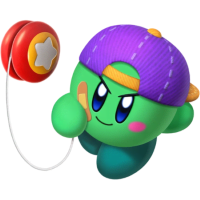

My favorite games of all time
Here is a non-exhaustive list of the video games that marked my childhood or gave me a real appreciation for gaming. From the early days with the PS2, to recent ones on PC.
Monter Hunter Freedom Unite - PSP
My all-time favorite game. I've spent countless hours playing this game on PSP as a kid, the village you live in, the sounds, the music, and the ambience really made me feel like I was home when i played it.
Little Big Planet 2 - PS3
This and LBP1 are my favorite games on the PlayStation 3. It made me utilize my imagination and create my own levels and machines. The community on this game was amazing and the user-created levels were legendary, like "My Little Dead Space", Shark Survival, Bomb survival etc. I played this game everyday after school. I miss it dearly, now that the servers are closed.
Super Smash Bros. Ultimate - Switch
I've been a fan of the Smash series since I was a kid, I only played it on special occasions when my brother brought his friends home, so naturally it was the first game I bought on the Switch. I never had the opportunity to play the Smash games online before, so that was awesome. It made me be able to relive these old days but with other people. It's the best and most complete Smash Bros game ever. Kirby main BTW.
Super Smash Bros Melee - Gamecube
It's my first Smash Bros game, and thus it deserves to be on this list. It was an awesome game for the GameCube and still is. I have a lot of memories playing this game with my brother and his friends.
Monster Hunter Tri - Wii
My brother introduced me to Monster Hunter with Freedom Unite, but when this game released on console, we both got it on our Wii's. I had a lot of fun playing with my brother and randoms on the multiplayer. There was nothing really like it back then, and it was very popular. You could fight monsters on the surface or underwater, my favorite being the Lagiacrus.
Deep Rock Galactic - PC
A hidden gem I discovered recently. You go on mining missions in procedurally generated caves, either in solo with Bosco, the helper robot, or 3 other teammates heavily inspired by Team Fortress classes: Gunner, Engineer, Scout. Oh, and there's the driller too. The missions are dangerous, you have to fight a lot of bugs. What I love the most about this game is the salute you can do to teammates by pressing V: "Rock and Stone!" or, "If you don't Rock and Stone, you ain't going home". Also, pinging random stuff with the laser pointer makes funny voice lines like "Mushroom" or "We're rich" and it's a meme to spam ping these in the community. For modern games, it's the best community I know of, and the devs are not greedy and are down to earth. There are no dumb microtransactions and the only DLC's are cosmetic to support the devs.
Modnation Racers - PS3
Man, I've spent so much time on this game back in the days. You could customize your cars and make your own circuits. It had an awesome and creative community much like Little Big Planet. There were so many custom skins and cars made by the players, it was awesome.
Star Wars: Battlefront II - PS2
This was my favorite game back on PS2, that game and its PSP versions Rogue Squadron and Elite Squadron are masterpieces. Nowadays on PC you can even add mods that bring back the Battlefront 3 sequel that was supposed to come out. I remember finding the secrets and exploring the maps, or just pretending to be an AI clone, lol. Back then, I had no concept of online multiplayer, and the large scale battles with AI were really cool to me.
Mario Kart Wii - Wii
The best Mario Kart ever. It was wild playing Mario Kart online for the first time when it released. The Wii era was really something to live. Everyone knew that game. I remember playing this game with my cousins with the plastic wheel where you attached your remote in.
Mario Kart Double Dash!! - Gamecube
My first Mario Kart game, I also played this with my brother on special occasions, an amazing game and I remember how good it looked for the time. Not gonna lie, I found the GameCube graphics better than the PS2. It has some of the best tracks from the series, my favorites being Peach Beach and DK Mountain. Also, the Baby Park theme can't get out of my head, send help.
Pokemon Mystery Dungeon - Gameboy Advance
Gotta be my favorite GameBoy game. Instead of capturing Pokémon, you play as one of them, and your mission is to rescue other Pokémon with your team. It's probably inspired from that one episode where the Pokémon talk to each other to try and find their lost masters.
MX vs ATV Untamed - PS2
A racing game on the PS2 that I played to death, it was one of my favorite games and made me become obsessed with bikes and racing at the time. I was considering becoming a racer back then (I was like 8).
MotorStorm: Pacific Rift - PS3
One of the most impressive racing games from the PS3 era. This was a blast to play online, there were people driving trucks, bikes, monster trucks, all at the same time, and trying to stop each others from finishing the race. I miss this series, it was so cool.
SW Battlefront: Elite Squadron - PSP
This game for me was Battlefront 2 on the go, it even allowed you to switch between ground and space battle in the same game. It uses a lot of Battlefront III assets and is as close as we can get to the cancelled sequel.
Digimon Rumble Arena II - Gamecube
This was a game I played very early in my childhood. I wanted to play it all the time with my brother, and it had this kind of nostalgic, wondrous feeling that I can't explain when I played it. It may be a Smash Bros rip-off, but it has a place in my heart.
Playstation Home - PS3
If any of you lived through the PS3 era, this game was just iconic. There were plenty of minigames from all subjects, Star Wars, Zombies, etc. You could own your own home, a bit like the Sims, and talk to other people. Nostalgic game.
Mass Effect 3 - PS3
I replayed this game many many times on PS3, and then on PC, where I also played the prequels. I absolutely love the story of this game and the soundtrack, it's just perfect. I used to draw the "Reapers" a lot when I was a kid, I won't spoil but they are an almost immortal race of machines. Please play this series if you have not!
Kirby's Return to Dream Land Deluxe - Switch
A remaster of the Wii game that I never played. I really love this game. One of the best Kirby games I own. It has a lot of mini-games and level variety and the gameplay is simple and straightforward.
Kirby and the Forgotten Land - Switch
My second game on the Switch and the one that introduced me to Kirby games. Really enjoyed it and it looks amazing. Gameplay is fun and challenging at times, and it does everything you expect. Level design is superb as well. Soundtrack is also really great.
Pokémon HeartGold - DS
My favorite Pokémon game, I also remember playing the original on the GameBoy. The soundtrack and roster is great. My brother and I are fans of Pokémon since watching the cartoon when it was airing on TV in the early 2000s.
Lego Star Wars - Gamecube
The two games, for the prequels and the original trilogy, are my favorite Lego games, The movies are well represented and the gameplay is fun and intuitive. I spent a lot of my childhood on that game as I was also a Star Wars fan (Episode III released when I was 5).
Mario Kart - DS
Spent hundreds of hours probably on this game, it is so nostalgic and it was fantastic, it even had R.O.B as a character. Waluigi Pinball was an awesome map on this.
Mario Party - DS
I played Mario Party since the GameCube days with Mario Party 4, 5, 6, and this handheld version of it utilizing the stylus is the best one in my opinion.
MH Generations Ultimate - Switch
Monster Hunter game on the Switch, it brings back the old villages from the previous games, and has a nostalgic feel to it. Also the biggest monster roster in all the MH Games.
Mario Party Superstars - Switch
My first online Mario Party game, I love the N64 remastered maps on this one, it's great fun. More than half of my switch Friend list is from players I've played with on this game.
The Elder Scrolls V: Skyrim - PC
Skyrim, from console to PC, the game where I spent hundreds of hours adventuring, slaying dragons, and more than anything, exploring, and what a world to explore indeed, the open world of Skyrim is my personal favorite, and it has the biggest mod community that I know of.
Minecraft - PC
One of the first games I got on my PC around 2011, I've played it ever since, with long breaks sometimes, but I always come back to it after a while. You probably already know everything about this game. The first version I played was 1.0. I remember building huge castles in creative mode, being scared of Herobrine, playing with my friends on servers, hosting locally with Hamachi, and all the music and other videos that i used to watch and still do. Thank you, Notch, for this amazing game and the memories associated with it.
Mount & Blade: Warband - PC
My most played game on Steam, with 3000+ hours on the counter. I played mostly its DLC Napoleonic Wars and used to be part of a "Regiment" that took part in organized battles with 200 players in one server. The game is in my opinion better than its sequel Bannerlord. It still has a loyal player base.
StarCraft II - PC
This game made me buy a PC, when I saw my brother play it I wanted to play it, too. I spent probably thousands of hours on it and made good friends. The story is amazing, but my favorite thing was "Arcade" where you could play user-created maps.
Rome: Total War - PC
I sank hours and hours on this game and its extension "Barbarian Invasion" back when I was away from home with no internet access on my old laptop. The music, ambience and everything is amazing in this game, in my opinion, the best Total War release.
Tropico 3 - PC
On this game, you control El Presidente and have to make your island prosper. It's a fun little city builder game, and still looks good today. I played it each time I went on vacations as it was one of the few games I had on my laptop.
Imperium Romanum - PC
Another city builder I used to play a lot. This time in the ancient Rome period. You must feed your citizens, build circuses, monuments, and protect yourself from invasions (unless you play on a peaceful map). Still love it today, a unique game and the graphics didn't age so badly.